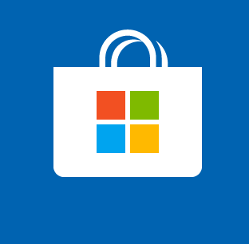

You are already using a VPN but are you continually checking that it is operating as intended? What happens when it goes down unexpectedly? This is where VPN Check and Act comes in.
VPN Check and Act:
VPN Check and Act is available, fully featured, for free as a one day trial. This allows you to ensure that the application works with your VPN and provides the functionality that you require. After the trial, it is available to purchase for a nominal fee.
